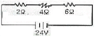

자동차정비기능사 (2007-04-01 기출문제)
1과목: 자동차공학
1. 실린더의 연소실 체적이 60cc, 행정 체적이 360cc인 기관의 압축비는?
- 5 : 1
- 6 : 1
- 7 : 1
- 8 : 1
(정답률: 76%)

2. 4행정 4기통 기관에서 점화순서가 1-3-4-2 인데 2번 실린더가 배기행정 을 하고 있다. 이 때 3번 실린더는 어떤 행정을 하고 있는가?
- 흡입 행정
- 압축 행정
- 동력 행정
- 배기 행정
(정답률: 80%)
3. 실린더 블록이나 헤드의 평면도 측정에 알맞은 게이지는?
- 마이크로미터
- 다이얼 게이지
- 버니어 캘리퍼스
- 직각자와 필러 게이지
(정답률: 88%)
4. 150kgf의 물체를 수직 방향으로 매초 1m의 속도로 올리려 면 몇 PS의 동력이 필요한가?
- 1PS
- 0.5PS
- 2PS
- 5PS
(정답률: 53%)
5. 디젤 노크를 방지하는 대책으로 적합하지 않은 것은?
- 고세탄가 연료를 사용하여 착화지연 기간이 단축되도록 한다.
- 착화지연 기간 중 연료의 분사량을 적게 한다.
- 압축 온도를 높인다.
- 압축비를 낮게 한다.
(정답률: 68%)
6. 피스톤 옵셋(off set)을 두는 이유로 가장 올바른 것은?
- 피스톤의 틈새를 크게 하기 위하여
- 피스톤의 마멸을 방지하기 위하여
- 피스톤의 측압을 작게 하기 위하여
- 피스톤 스커트부에 열전달을 방지하기 위하여
(정답률: 57%)
7. 다음 중 기관이 과열되는 원인이 아닌 것은?
- 온도조절기가 닫힌 상태로 고장 났을 때
- 방열기의 용량이 클 때
- 방열기의 코어가 막혔을 때
- 벨트를 사용하는 형식에서 팬벨트 장력이 느슨할 때
(정답률: 71%)
8. TPS스로틀 포지션 센서)에 대한 설명으로 틀린 것은?
- 일반적으로 가변 저항식이 사용된다.
- 운전자가 가속페달을 얼마나 밟았는지 감지한다.
- 급가속을 감지하면 컴퓨터가 연료분사 시간을 늘려 실행시킨다.
- 분사시기를 결정해 주는 가장 중요한 센서이다.
(정답률: 50%)
9. 디젤기관에서 연료 분무형성의 3대 요건이 아닌 것은?
- 노크
- 관통력
- 분포
- 무화
(정답률: 70%)
10. 가솔린의 화합물로 맞는 것은?
- 탄소와 수소
- 수소와 질소
- 탄소와 산소
- 수소와 산소
(정답률: 75%)
11. 평균 유효 압력이 4kgf/㎠, 행정 체적이 300cc인 2행정 사이클 단기통 기관에서 1회의 폭발로 몇 kgf-m의 일을 하는가?
- 6
- 8
- 10
- 12
(정답률: 45%)
12. 다음 중 디젤기관에 사용되는 과급기의 역할은?
- 윤활성의 증대
- 출력의 증대
- 냉각효율의 증대
- 배기의 증대
(정답률: 83%)
13. 질코니아식 산소센서에서 발생되는 기전력의 변화의 범위는?
- 0.1～ 0.1V
- 0.1～1.0V
- 1.0 ～ 2.0 V
- 2.0 ～ 3.0V
(정답률: 65%)
14. 전자제어 엔진에서 컴퓨터는 무엇으로 연료 분사량을 조절 하는가?
- 인젝터의 통전 시간
- 인젝터의 공급 전압
- 인젝터의 니들 밸브 행정
- 인젝터의 공급 전류
(정답률: 58%)
15. 전자제어 가솔린분사장치에서 엔진의 각종 센서 중 입력 신호가 아닌 것은?
- 스로틀 포지션 센서
- 냉각 수온 센서
- 크랭크 각 센서
- 인젝터
(정답률: 73%)
16. 전자제어 엔진에서 흡입 공기량을 계량할 때 질량 유량을 검출하는 방식은?
- 열선식
- 칼만 와류식
- 가동 베인식
- 맵센서 방식
(정답률: 45%)
17. 다음 중 기화기식과 비교한 MPI 연료분사 방식의 특징으로 잘못된 것은?
- 저온 또는 고속에서 토크 영역의 변화가 가능하다.
- 온/냉시에도 최적의 성능을 보장한다.
- 설계시 체적효율의 최적화에 집중하여 흡기다기관 설계가 가능하다.
- 월 웨이팅(wall wetting)에 따른 냉시동 특성은 큰 효과가 없다.
(정답률: 79%)
18. 윤활장치 내의 압력이 지나치게 올라가는 것을 방지하며, 회로 내의 유압 을 일정하게 유지하는 기능을 하는 것은?
- 오일펌프
- 유압조절밸브
- 오일여과기
- 오일냉각기
(정답률: 88%)
19. LPG 기관에서 연료공급 경로로 맞는 것은?
- 연료탱크 → 솔레노이드 밸브 → 베이퍼라이저 → 믹서
- 연료탱크 → 베이퍼라이저 → 솔레노이드 밸브 → 믹서
- 연료탱크 → 베이퍼라이저 → 믹서 → 솔레노이드 밸브
- 연료탱크 → 믹서 → 솔레노이드 밸브 → 베이퍼라이저
(정답률: 59%)
20. 다음 중 EGR(Exhaust Gas Recirculation)밸브의 구성 및 기능 설명으로 틀린 것은?
- 배기가스 재순환 장치
- EGR 파이프, EGR밸브 및 서모밸브로 구성
- 질소화합물(NOX) 발생을 감소시키는 장치
- 연료 증발가스(HC) 발생을 억제 시키는 장치
(정답률: 76%)
2과목: 자동차정비 및 안전기준
21. 전자제어 엔진의 연료펌프에서 첵밸브가 하는 역할은?
- 잔압 유지와 고온 재시동을 용이하게 한다.
- 연료 압력의 맥동을 감소시킨다.
- 연료가 막혔을 때 압력을 조절한다.
- 연료를 분사한다.
(정답률: 62%)
22. 밸브개폐시기선도에서 밸브오버랩(Valve over lap)이란?
- 흡기 밸브만 열려있는 기간
- 배기 밸브만 열려있는 기간
- 배기 밸브와 흡기 밸브가 동시에 열려 있는 기간
- 배기 밸브와 흡기 밸브가 동시에 닫혀 있는 기간
(정답률: 87%)
23. 승합자동차의 승객 좌석의 설치높이는?
- 34cm 이상 40cm 이하
- 40cm 이상 45cm 이하
- 45cm 이상 50cm 이하
- 50cm 이상 67cm 이하
(정답률: 65%)
24. 주행상태에서 변속할 때 변속기 충돌음이 발생하는 원인으로 가장 적당한 것은?
- 바르지 못한 엔진과의 언라인먼트
- 드라이브 기어의 마모
- 싱크로나이저링의 고장
- 변속 링키지의 헐거움
(정답률: 59%)
25. 조향장치에서 조향기어의 백래시가 너무 크면 어떻게 되는가?
- 조향각도가 크게 된다.
- 조향기어 비가 크게 된다.
- 조향핸들의 유격이 크게 된다.
- 핸들의 축방향 유격이 크게 된다.
(정답률: 61%)
26. 브레이크 페달을 밟아도 브레이크 효과가 나쁘다. 그 원인이 아닌 것은?
- 브레이크 오일의 부족
- 라이닝에 오일부착
- 브레이크액에 공기 혼입
- 브레이크 간격 조정이 지나치게 적을 때
(정답률: 60%)
27. 차동장치 링기어의 흔들림을 측정하는데 사용되는 것은?
- 디그니스 게이지
- 다이얼 게이지
- 마이크로미터
- 실린더 게이지
(정답률: 57%)
28. 자동변속기의 전자제어 장치 중 T.C.U에 입력되는 신호가 아닌 것은?
- 스로틀 포지션 센서 신호
- 엔진회전 신호
- 엑셀레이터 신호
- 흡입공기 온도의 신호
(정답률: 56%)
29. 동력 조향장치를 동력실린더와 제어밸브의 형태 및 배치에 따라 분류한 형식 이다. 이에 해당 되지 않는 것은?
- 인테그럴형
- 분리형
- 일체형
- 콘티형
(정답률: 50%)
30. 전부동식 차축에서는 뒤 차축을 어떻게 작업하는가?
- 허브를 떼어낸다.
- 허브를 떼어내지 않고 작업한다.
- 바퀴를 떼어낸 다음에 작업한다.
- 바퀴를 꽉 조인 다음에 떼어낸다.
(정답률: 54%)
31. 다음 중 가속 페달에 의해 저항 변화가 일어나는 센서는?
- 공기온도센서
- 수온센서
- 크랭크포지션센서
- 스로틀 포지션센서
(정답률: 70%)
32. 자동차의 앞 차륜 정열에서 킹핀의 연장선과 캠버의 연장선이 지면 위에서 만나게 되는 것을 무엇이라고 하는가?
- 캐스터
- 스크러브 레디어스
- 오버스티어링
- 코너링 포스
(정답률: 39%)
33. 자동차 클러치의 구비조건이 아닌 것은?
- 회전부분의 평형이 좋을 것
- 회전 관성이 클 것
- 회전력 단속이 확실할 것
- 과열되지 않을 것
(정답률: 83%)
34. 변속기의 제1감속비가 4.5 : 1 이고 종 감속비는 6 : 1일 때 총 감속비 는?
- 27 : 1
- 10.5 : 1
- 1.33 : 1
- 0.75 : 1
(정답률: 60%)
35. 다음 중 스팬의 길이 변화를 가능하게 하는 것은?
- 섀클
- 스팬
- 행거
- U볼트
(정답률: 69%)
36. ECS 장착 차량에서 차량의 높이를 감지하는 센서는?
- 차고 센서
- 차속 센서
- 스티어링 휠 각도 센서
- 스트러트 유니트
(정답률: 86%)
37. 자동변속기에서 토크컨버터의 슬립에 의한 손실을 최소화하기 위한 작동 기구는?
- 댐퍼 클러치
- 다판 클러치
- 일방향 클러치
- 롤러 크러치
(정답률: 74%)
38. 마스터 백은 무엇을 이용하여 브레이크에 배력작용을 하는가?
- 배기가스 압력을 이용한다.
- 대기 압력만을 이용한다.
- 흡기 다기관의 압력만을 이용한다.
- 대기압과 흡기 다기관의 압력차를 이용한다.
(정답률: 66%)
39. 다음 중 ABS(Anti-Lock Brake System)의 구성요소가 아닌 것은?
- 스피드 센서
- 프로포셔닝 밸브
- 감쇠력 변환 액추에이터
- 하이드롤릭 유닛
(정답률: 47%)
40. 타이어의 높이가 180mm, 너비가 220mm인 타이어의 편평비는?
- 1.22
- 0.82
- 0.75
- 0.62
(정답률: 52%)
3과목: 안전관리
41. 일반적으로 에어 백(Air Bag)에 가장 많이 사용되는 가스(gas)는?
- 수소
- 이산화탄소
- 질소
- 산소
(정답률: 82%)
42. 그림에서 2Ω과 4Ω 사이의 전선에 걸리는 전압은 얼마인가?

- 2v
- 4v
- 8v
- 12v
(정답률: 38%)
43. 트랜지스터의 대표적 기능으로 릴레이와 같은 작용을 하는 것을 무엇이라 하는가?
- 스위칭 작용
- 채터링 작용
- 장류 작용
- 상호 유도 작용
(정답률: 72%)
44. 12V용 배터리를 급속충전 하는데 전압이 얼마 이상 초과 되어서는 안 되는가?
- 10.5V
- 12V
- 13.5V
- 15.5V
(정답률: 31%)
45. 트랜지스터(NPN형)에서 점화코일의 1차 전류는 어느 쪽으로 흐르게 하는가?
- 이미터에서 컬렉터로
- 베이스테엇 컬렉터로
- 컬렉터에서 베이스로
- 컬렉터에서 이미터로
(정답률: 49%)
46. 전동기의 기본 원리는 어느 법칙에 해당 되는가?
- 플레밍의 왼손 법칙
- 렌츠의 법칙
- 오른나사의 법칙
- 키르히호프의 법칙
(정답률: 80%)
47. 발전기 출력이 낮고 축전지 전압이 낮을 때, 원인으로 해당 되지 않는 것은?
- 충전회로에 높은 저항이 걸려있을 때
- 발전기 조정전압이 낮을 때
- 다이오드의 단락 및 단선이 되었을 때
- 축전지 터미널에 접촉이 불량할 때
(정답률: 39%)
48. 연료 탱크의 연료량을 표시하는 연료계의 형식 중 계기식의 형식에 속하지 않는 것은?
- 밸런식 코일식
- 연료면 표시기식
- 서미스터식
- 바이메탈 저항식
(정답률: 43%)
49. 다음 중 헤드램프가 작동되지 않는 원인으로 가장 적합한 것은?
- 미등퓨즈 소손
- 비상경고등 스위치 소손
- 외이어링 혹은 접지 불량
- 방향지시등 퓨즈가 끊어짐
(정답률: 48%)
50. 자동차에 사용되는 냉매 중 오존을 파괴하지 않는 냉매는?
- R-11
- R-12
- R-113
- R-134a
(정답률: 74%)
51. 작업시작 전의 안전점검에 관한 사항 중 잘못 짝지어진 것은?
- 인적인면 - 건강상태, 기능상태
- 물질적인면 - 기계기구설비, 공구
- 관리적인면 - 작업내용, 작업순서
- 환경적인면 - 작업방법, 안전수칙
(정답률: 66%)
52. 다음 중 안전 표시 색채의 연결이 맞는 것은?
- 주황색 - 화재의 방지에 관계되는 물건에 표시
- 흑색 - 방사능 표시
- 노란색 - 충돌, 추락 주의 표시
- 청색 - 위험, 구급장소 표시
(정답률: 64%)
53. 선반 주축의 변속은 기계를 어떠한 상태에서 하는 것이 가장 좋은가?
- 저속으로 회전시킨 후 한다.
- 기계를 정지시킨 후 한다.
- 필요에 따라 운전 중에 할 수 있다.
- 어느 때이든 변속 시킬 수 있다.
(정답률: 72%)
54. 줄 작업시 주의사항이 아닌 것은?
- 뒤로 당길 때만 힘을 가한다.
- 공작물은 바이스에 확실히 고정한다.
- 날이 메꾸어 지면 와이어 브러시로 털어낸다.
- 절삭가루는 솔로 쓸어낸다.
(정답률: 73%)
55. 다음은 공기공구에 사용에 대한 설명이다. 틀린 것은?
- 공구의 교체시에는 반드시 밸브를 꼭 잠그고 하여야 한다.
- 활동 부분은 항상 윤활유 또는 그리스를 급유한다.
- 사용시에는 반드시 보호구를 착용해야 한다.
- 공기구를 사용할 때에는 밸브를 일시에 열고 닫는다.
(정답률: 64%)
56. 다음은 사이드슬립 시험기 사용시 주의할 사항이다. 틀린 것은?
- 시험기의 운동부분은 항상 청결하여야 한다.
- 시험기의 답판 및 타이어에 부착된 수분, 기름, 흙 등을 제거한다.
- 시험기에 대하여 직각방향으로 진입시킨다.
- 답판 위에서 차속이 빠르면 브레이크를 사용하여 차 속을 맞춘다.
(정답률: 65%)
57. LPG자동차 관리에 대한 주의 사항 중 맞지 않는 것은?
- LPG는 고압이고, 누설이 쉬우며 공기보다 무겁다.
- 가스 충전 시에는 합격용기인가를 확인하고, 과충전 되지 않도록 해야 한다.
- 엔진실이나 트렁크 실 내부 등을 점검할 때 라이터나 성냥 등을 켜고 확인한다.
- LPG는 온도상승에 의한 압력상승이 있기 때문에 용기는 직사광선 등 을 피하는 곳에 설치하고 과열되지 않아야 한다.
(정답률: 86%)
58. 엔진을 보링한 절삭면을 연마하는 기계로 적당한 것은?
- 보링머신
- 호닝머신
- 리머
- 평면 연삭기
(정답률: 41%)
59. 축전지의 점검과 전해액 비중 측정시의 지켜야 할 사항에 해당 되지 않는 것은?
- 전해액이 옷이나 피부에 닿지 않도록 한다.
- 충전기로 충전할 때에는 극성에 주의 한다.
- 축전지의 단자 전압은 교류전압계로 측정한다.
- 전해액 비중 점검결과 방전되면 보충전 한다.
(정답률: 61%)
60. 정비공장에서 지켜야 할 안전수칙이 아닌 것은?
- 작업 중 입은 부상은 응급치료를 받고 직시 보고한다.
- 밀폐된 실내에서는 시동을 걸지 않는다.
- 통로나 마룻바닥에 공구나 부품을 방치 하지 않는다.
- 기름걸레나 인화물질은 나무상자에 보관한다.
(정답률: 84%)
압축비 = 실린더 체적 / 행정 체적
주어진 문제에서 압축비를 구하기 위해 실린더 체적인 60cc와 행정 체적인 360cc를 대입하여 계산합니다.
압축비 = 60cc / 360cc = 1/6
하지만, 압축비는 분수로 표현하지 않고 정수로 표현하는 것이 일반적입니다. 따라서 압축비를 간단한 정수로 변환하기 위해 분모와 분자를 모두 6으로 나누어 줍니다.
압축비 = (60cc / 6) / (360cc / 6) = 10cc / 60cc = 1/6
압축비를 간단한 정수로 표현하면 6:1이 됩니다. 하지만, 보기에서는 6:1이 없고 7:1이 있으므로, 압축비를 조금 더 높게 설정하여 7:1이라는 답이 나온 것입니다. 이렇게 압축비를 높게 설정하면 연소 시 폭발이 더 강력해지므로, 더 많은 연료를 연소시킬 수 있어서 엔진의 출력이 높아집니다.